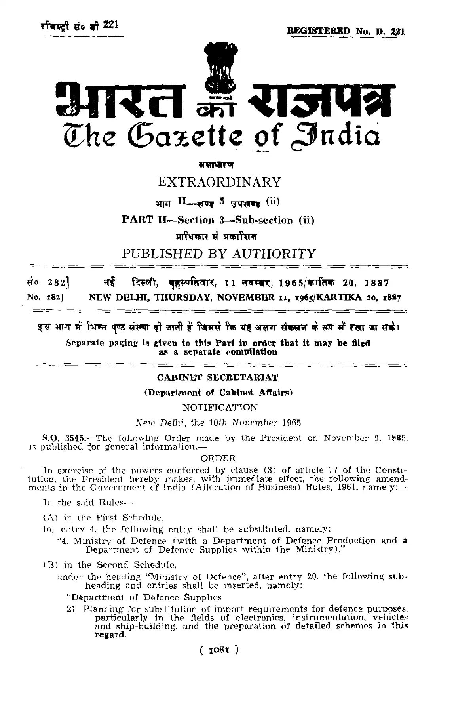
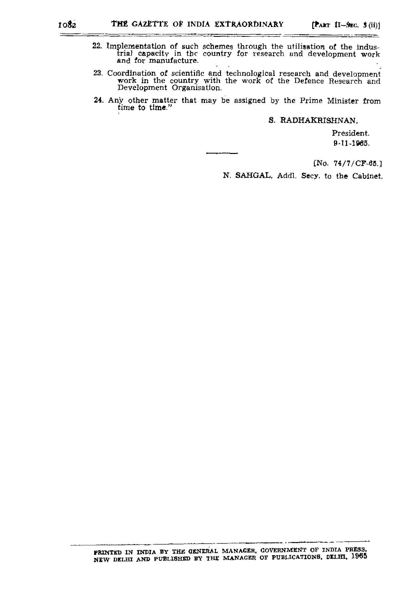

Amendment #43 (S.O. 3545, 1965)
2 changes: 1 to the First Schedule, 1 to the Second Schedule. 2 applied
The order, page by page
Page 1 of 2

12Schedule 1 › entry 4
- 4. Ministry of Defence
- -. Department of Defence Production and a
- Department of Defence Supplics within the Ministry)
applied at schedule 1 › ministry 4 in the Rules after #43
read hindi missing
after Schedule 2 › Ministry of Defence › entry 20
- Department of Defence Supplies
- 21. Planning for substitution of import requirements for defence purposes. particularly in the fields of electronics, instrumentation, vehicles and ship-building, and the preparation of detailed schemes in this regard. (1081) THE GAZETTE OF INDIA EXTRAORDINARY
- 22. Implementation of such schemes through the utilisation of the industrial capacity in the country for research and development work and for manufacture.
- 23. Coordination of scientific and technological research and development work in the country with the work of the Defence Research and Development Organisation.
- 24. Any other matter that may be assigned by the Prime Minister from time to time.
applied at schedule 2 › ministry MINISTRY OF DEFENCE › department DEPARTMENT OF DEFENCE PRODUCTION › entry 20 in the Rules after #43
read hindi missing, read page break
Page 2 of 2

How this document was read
From the Government of India (Allocation of Business) Rules, 1961 and their amendments, as published by the Cabinet Secretariat (cabsec.gov.in), read by orgpedia. The readings of the older scanned gazettes have known gaps.